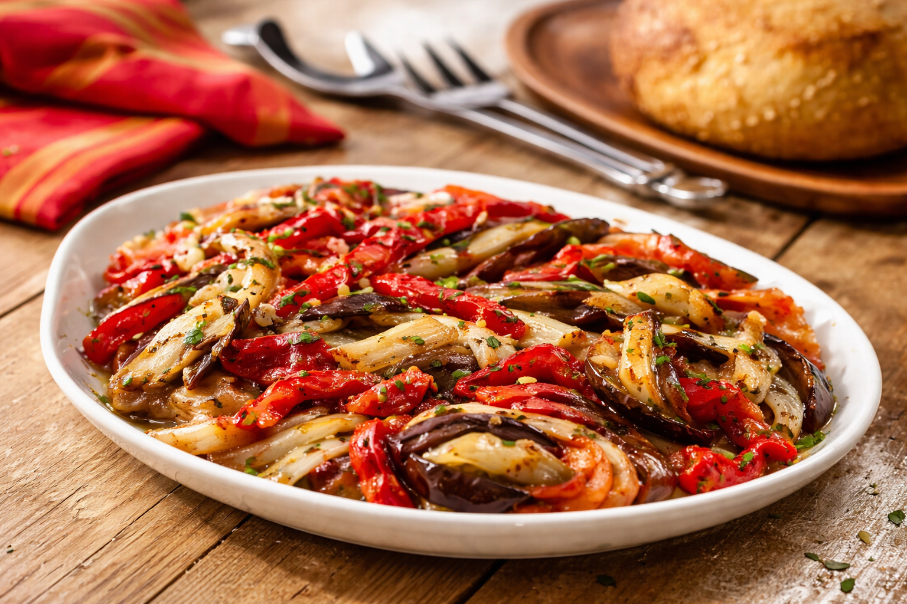
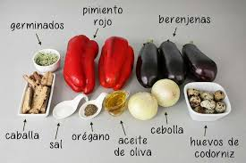
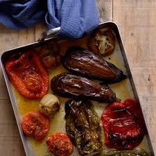
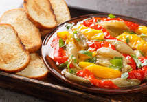

Escalivada
La escalivada es una elaboración tradicional del arco mediterráneo basada en verduras asadas, apreciada por su sencillez, su sabor intenso y el protagonismo absoluto del producto de temporada.

Tradición mediterránea
La escalivada es una receta muy vinculada a la cocina catalana y a otras zonas del Mediterráneo occidental. Su preparación se basa en asar lentamente verduras como la berenjena, el pimiento rojo y la cebolla para resaltar su textura y concentrar su sabor.
Una vez cocinadas, las verduras se pelan, se cortan en tiras y se aliñan habitualmente con aceite de oliva. Esa combinación convierte a la escalivada en un plato sencillo pero muy expresivo, donde la calidad del producto fresco resulta fundamental para obtener un buen resultado.
Además de servirse como plato por sí solo, también es frecuente presentarla como guarnición o acompañamiento de pan, pescado o conservas. Por eso sigue siendo una receta muy valorada tanto en el ámbito doméstico como en la restauración tradicional.
Galería de imágenes


